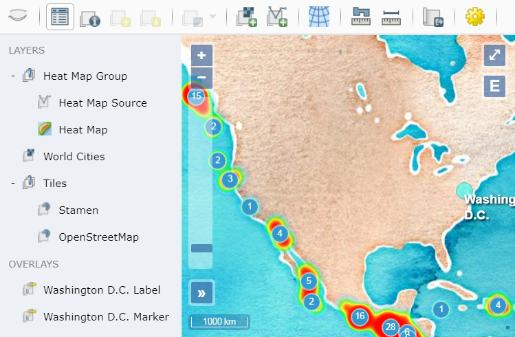

OpenLayers Explorer


OpenLayers Explorer (olexp) is a simple out-of-the-box web mapping solution. It provides a web application to add, visualize, and analyze spatial data. It provides the following common tools:
- Toolbar with standard tools (e.g., measuring tools).
- Outline to inspect and control the visible layers and overlays.
- Map to display raster tiles, vectors, and overlays.
It's a Javascript library that combines the mapping power of OpenLayers and the layout management of w2ui.

GETTING STARTED
An explorer can be added to a map by adding its dependencies OpenLayers,
w2ui, and jQuery
<link href="https://cdn.rawgit.com/openlayers/openlayers.github.io/master/en/v5.3.0/css/ol.css"
rel="stylesheet" type="text/css" />
<link href="https://unpkg.com/w2ui@1.4.3/w2ui.min.css" rel="stylesheet" type="text/css"/>
<link href="https://unpkg.com/olexp/dist/olexp.min.css" rel="stylesheet" type="text/css" />
<script src="https://unpkg.com/jquery@2.1.3/dist/jquery.min.js"></script>
<script src="https://cdn.rawgit.com/openlayers/openlayers.github.io/master/en/v5.3.0/build/ol.js"></script>
<script src="https://unpkg.com/w2ui@1.4.3/w2ui.min.js"></script>
<script src="https://unpkg.com/olexp/dist/olexp.min.js"></script>
then adding a div element and provding the id to the olexp.Explorer
constructor
<div id="explorer" style="height: 500px; width: 500px;"></div>
<script>
const explorer = new olexp.Explorer('explorer');
</script>
DOCUMENTATION
The following help is available at the olexp website:
BUILD
To build and test the library locally:
npm install
npm test
The bundled library and stylesheet are at dist/olexp.min.js and
dist/olexp.min.css.
LICENSE
Copyright (c) 2015 Daniel Pulido mailto:dpmcmlxxvi@gmail.com
Source code is released under the MIT License. Documentation is released under the CC BY 4.0. Icons are from OSGeo and released under the CC BY 4.0.